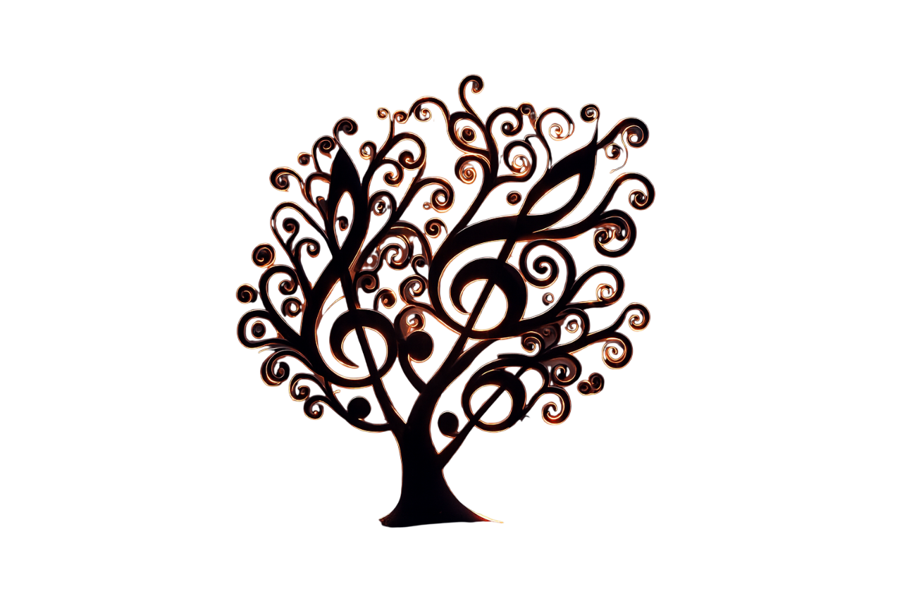
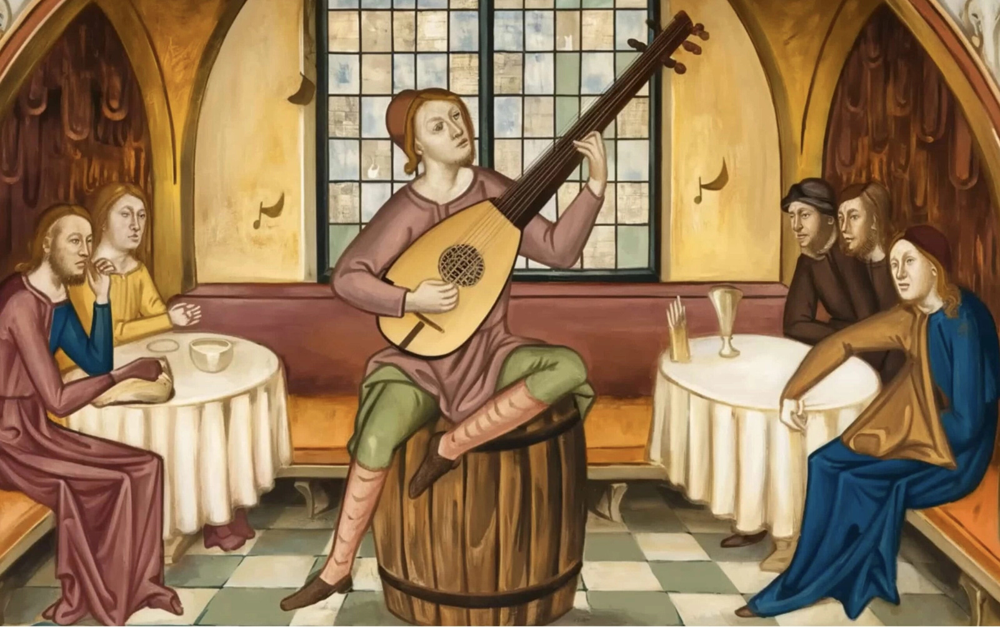
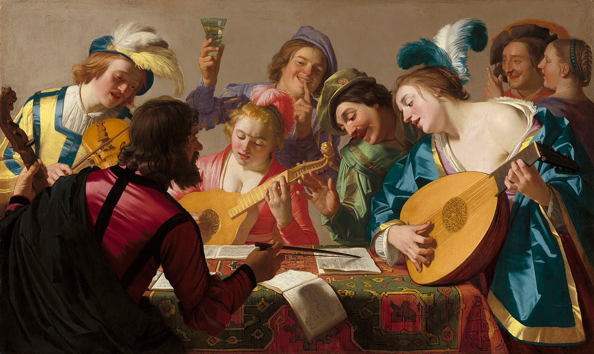
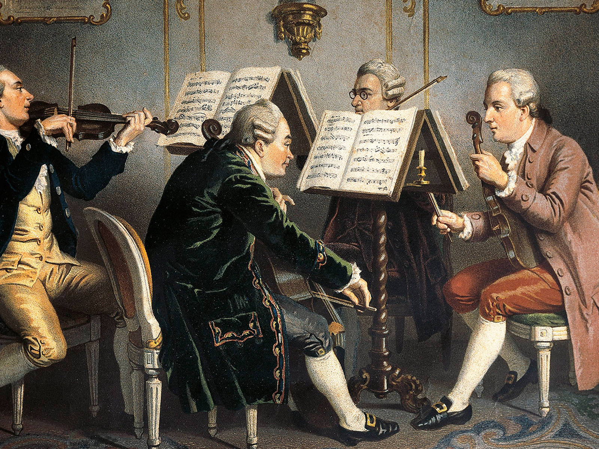
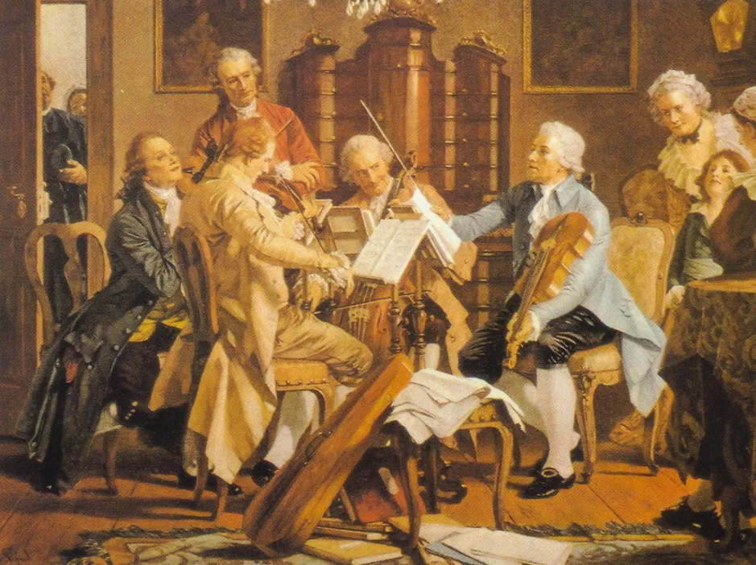
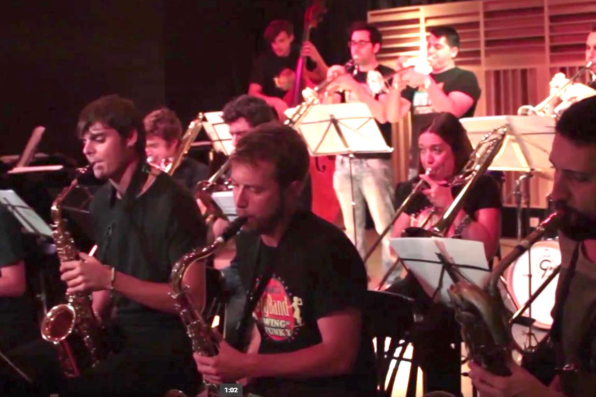

Material educativo para ESO

Un viaje cinematográfico a través de las épocas musicales
Desde los cantos gregorianos hasta el hip-hop moderno, la música ha sido el lenguaje universal de la humanidad. Cada época ha dejado su huella sonora, cada generación ha creado su propia banda sonora. Prepárate para explorar los momentos más importantes que han definido la música tal como la conocemos.
"Escuchar la historia de la música es escuchar la historia de cómo sentimos."
Línea temporal inmersivaInicio de la tradición del canto gregoriano
Guido d'Arezzo crea las notas musicales (Do, Re, Mi...)
Comienza el Renacimiento musical: polifonía coral
Monteverdi estrena "L'Orfeo", primera ópera moderna
Nacen Bach y Händel, los titanes del Barroco
Nace Mozart, el prodigio del Clasicismo
Beethoven estrena la 9ª Sinfonía siendo sordo
Edison inventa el fonógrafo: la música se puede grabar
Elvis y el rock and roll transforman la cultura
Se estandariza el MIDI: la revolución digital
La música más antigua conocida tiene más de 3.400 años y fue hallada en una tablilla sumeria.
Escuchar música activa todas las áreas conocidas del cerebro simultáneamente.
Un violín Stradivarius puede valer más de 16 millones de dólares.
Mozart compuso su primera sinfonía completa a los 8 años de edad.
La canción más larga de la historia dura 639 años y se toca en Alemania desde 2001.
Se estima que en el mundo existen más de 1.200 géneros musicales diferentes.
"La música es el arte más directo, entra por el oído y va al corazón."
En los monasterios y castillos de la Europa medieval, nacieron los primeros sistemas de notación musical. El canto gregoriano dominaba las ceremonias religiosas, mientras los trovadores recorrían los reinos compartiendo canciones de amor cortés y hazañas heroicas.
Esta época vio el desarrollo de la polifonía, permitiendo que múltiples melodías sonaran simultáneamente, un concepto revolucionario que cambiaría la música para siempre.

"Los monjes preservaron la tradición musical"

"El humanismo transformó la composición"
"La armonía perfecta refleja el orden del universo."
El Renacimiento trajo una explosión de creatividad musical. Los compositores exploraron nuevas formas de armonía y contrapunto, creando obras de increíble belleza y complejidad. La música se volvió más expresiva y emotiva, reflejando el espíritu humanista de la época.
Compositores como Palestrina, Josquin des Prez y Monteverdi elevaron la música coral a nuevas alturas, mientras la música instrumental comenzaba a ganar importancia propia.

"Equilibrio, claridad y proporción"
"La simplicidad es la máxima sofisticación."
Mozart, Haydn y el joven Beethoven definieron esta era de claridad, equilibrio y forma perfecta. La sinfonía alcanzó su estructura clásica, y el piano se convirtió en el rey de los instrumentos.
El clasicismo buscaba la perfección formal, la melodía elegante y la armonía transparente. Fue una época de refinamiento y gracia, donde cada nota tenía su lugar preciso.
"La música es el lenguaje del espíritu."
La emoción desbordante y la expresión personal dominaron esta época. Chopin, Liszt, Wagner y Tchaikovsky expandieron los límites de la orquesta y el piano, creando obras de pasión desbordante y dramatismo intenso.
El romanticismo celebraba el individuo, la naturaleza y lo sublime. Las formas musicales se expandieron, las orquestas crecieron y la música se volvió más programática, contando historias y pintando paisajes sonoros.

"La pasión se convirtió en arte"

"Rompiendo todas las reglas"
"Todo sonido puede ser música."
El siglo XX explotó en mil direcciones. Jazz, blues, rock, electrónica, minimalismo, atonalismo... La música se volvió experimental, diversa y global. La tecnología transformó no solo cómo hacemos música, sino qué consideramos música.
Desde las disonancias de Stravinsky hasta los beats de hip-hop, desde la música concreta de Schaeffer hasta el ambient de Brian Eno, el siglo XX demostró que los límites de la música son infinitos.
Explora cada época con audios, partituras y actividades interactivas pensadas para el aula.